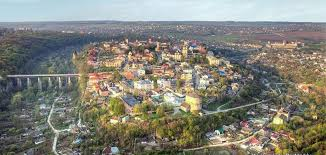

Каманец-Подольский с 11 века был известен как Каменец (от восточнославянского-"камень"),что было связанно со скальным характером грунта местности.
В более поздних источниках и летописях появляется новое,двойное название - Каменец-Подольский,супоминанием во второй части Подолии (укр.Подiлля,польск.Podole-"долина,низина",также в летописях известное как "Понизье")местонахождения города,что было необходимо для отличия Каменца от имевших идентичное название городов.В конце 19 - начале 20 вв.город носил название "Каменец-Подольск".
Расположен в центре Волыно-Подольской возвышенности в 101 км от Хмельницкого.Через город протекает река Смотрич,создавая скалистым каньоном своего русла омега-образную петлю.На территории образованного каньоном полуострова расположен Старый город-древний историко-культурный комплекс.Старый город состоит из старинных архитектурных построек,отражающих культуры народов,проживавших здесь в разное время.